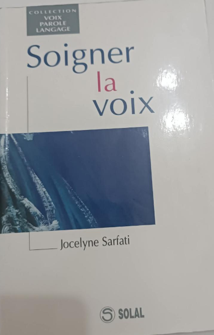
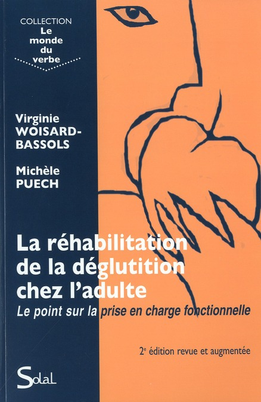
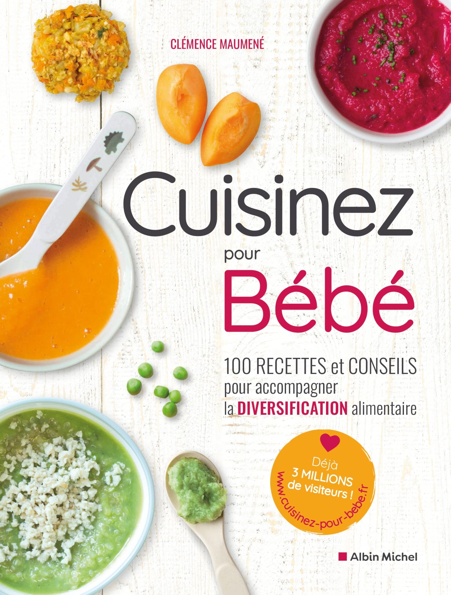
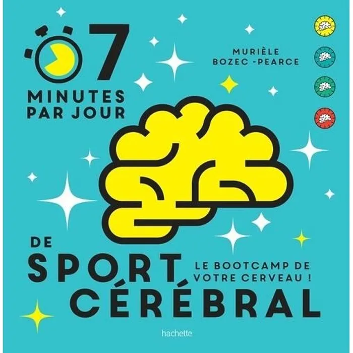
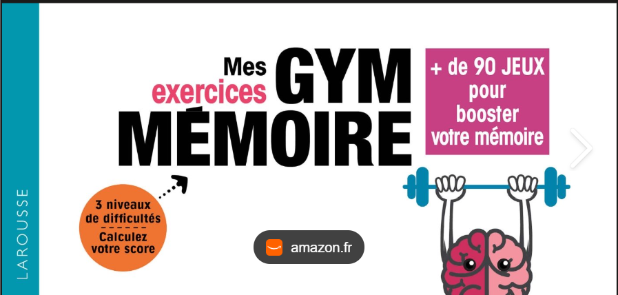

À propos de moi
Je suis Sarah Gali, orthophoniste passionnée par l'accompagnement des enfants et des adultes présentant des troubles de la communication, du langage oral et écrit, de l'alimentation et des fonctions oro-faciales.
À travers mon parcours, j'ai développé un intérêt particulier pour l'évaluation, la rééducation et la création d'outils thérapeutiques adaptés aux besoins de chaque patient. J'accorde une grande importance à une prise en charge personnalisée, basée sur les données scientifiques actuelles et adaptée au contexte de chaque famille.
J'accompagne notamment les enfants présentant des difficultés de langage, des troubles des apprentissages, des troubles du spectre de l'autisme, ainsi que les patients ayant des troubles oro-myo-fonctionnels ou alimentaires. En parallèle de mon activité clinique, je propose des formations et je partage des ressources destinées aux professionnels et aux familles afin de favoriser une meilleure compréhension des troubles de la communication et des stratégies d'accompagnement.
Rendre l'orthophonie accessible, humaine et basée sur des pratiques actualisées, tout en valorisant le potentiel unique de chaque personne accompagnée.
Parcours Professionnel
Orthophoniste algérienne diplômée, installée en pratique libérale, je suis la fondatrice de Ortho Space Algérie, un espace dédié à l'accompagnement orthophonique des bébés, enfants, adultes et personnes âgées.
Dans une démarche de formation continue, j'ai suivi de nombreuses formations spécialisées auprès d'organismes et d'experts internationaux, afin d'enrichir ma pratique clinique et d'actualiser mes approches thérapeutiques.
Mon parcours est également enrichi par une formation universitaire en langue anglaise — un choix qui s'inscrit dans une volonté d'accéder aux ressources scientifiques internationales, aux recherches récentes et aux publications disponibles en anglais dans le domaine de l'orthophonie, afin de rester informée des avancées scientifiques à l'échelle internationale.
Langues Parlées
J'assure des prises en charge en arabe, français et anglais, afin de proposer un accompagnement adapté au contexte linguistique et culturel de chaque patient.
Arabe
LANGUE MATERNELLEFrançais
COURANTAnglais
INTERMÉDIAIREMes Spécialités
Langage oral
Troubles du développement du langage
Sons de la parole
Articulation et phonologie
Apprentissages
Troubles spécifiques des apprentissages
TSA & Communication
Troubles du spectre de l'autisme
CAA
Communication Alternative et Améliorée
Alimentation
Troubles alimentaires pédiatriques
Oro-myo-fonctionnel
Fonctions oro-faciales
Déglutition
Troubles de la déglutition
Aphasie post-AVC
Troubles neurologiques de la communication
Voix
Troubles de la voix
Bégaiement
Fluence de la parole
Mes Outils
En parallèle de mon activité clinique, je développe des projets autour de l'innovation en orthophonie, à travers la création d'outils thérapeutiques et des actions de formation destinées aux professionnels.
OrthoMath
Outil de rééducation autour du raisonnement logico-mathématique
Phonolab
Laboratoire d'exercices pour la conscience phonologique
Kit du praticien
Ressources pratiques pour les professionnels de l'orthophonie
Mes Lectures
Quelques ouvrages qui accompagnent ma pratique clinique et ma formation continue. Survolez un livre pour le sortir de l'étagère.

Soigner la voix
Jocelyne Sarfati
La réhabilitation de la déglutition chez l'adulte
Woisard-Bassols & Puech
Mon enfant mange n'importe quoi
Alimentation du jeune enfant
7 minutes par jour de sport cérébral
Hachette
Mes exercices Gym Mémoire
Larousse« Tant de livres, si peu de temps. »